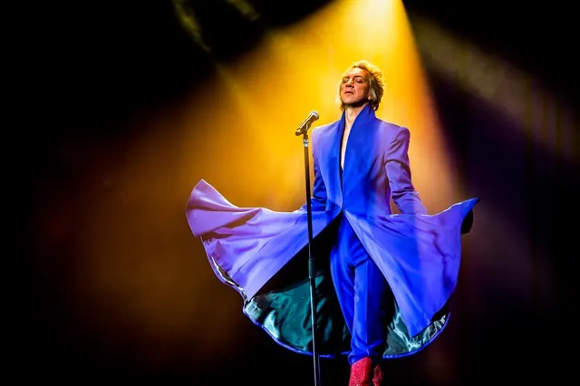

Nieuws ·
Sven Ratzke wint de Karel de Grote Oeuvreprijs stad Nijmegen 2024

Van café Stijn Buys naar de grote podia in binnen- en buitenland. Zanger, entertainer en acteur Sven Ratzke krijgt dit jaar de Karel de Grote Oeuvreprijs van de gemeente Nijmegen. Deze prijs gaat iedere vier jaar naar een kunstenaar voor het totale artistieke en culturele werk en de waarde ervan voor de stad Nijmegen.
Wethouder Noël Vergunst (Cultuur): “Sven Ratzke’s indrukwekkende nationale en internationale cv spreekt eigenlijk voor zich. Een rasechte maker en vernieuwer, waar Nijmegen alleen maar trots op kan zijn. Sven ontvangt de Karel de Grote Oeuvreprijs niet als kroon ter afsluiting van een oeuvre, maar als een erkenning voor alle mooie en relevante voorstellingen, rollen en platen die hij de afgelopen decennia heeft gespeeld en gemaakt. Zijn geschiedenis van innovatieve voorstellingen maakt toeschouwers en fans constant nieuwsgierig naar zijn plannen voor de toekomst.”
Prijzen Grote Oeuvreprijs 2024
Ratzke heeft een internationale carrière als zanger, entertainer en performer. Op zijn cv staan veel optredens in Nederland, maar ook in (onder andere) New York, Berlijn, Mexico-Stad, Melbourne, Auckland en Wenen was hij te bewonderen. Niet alleen de lijst met plekken die Ratzke met zijn voorstellingen heeft aangedaan is indrukwekkend, ook de samenwerkingen die hij door de jaren heen is aangegaan, imponeren. Zo werkte hij onder andere samen met het Metropole Orkest,Asko Schönberg, Holland Baroque en Rufus Wainwright. Hij won verschillende internationale prijzen in Duitsland en Australië. In Nederland was hij winnaar van een Musical Award voor Beste Hoofdrol in de musical The Rocky Horror Show.
Sven Ratzke is opgegroeid in Nijmegen. Hij ging naar het Karel de Grote College en vanaf zijn 16e trad hij in Nijmegen op voor publiek. Eerst in café Stijn Buys, daarna ook in O42, Stadsschouwburg, LUX, de Vereeniging en op verschillende Nijmeegse festivals. Na vele jaren omzwervingen in onder andere Amsterdam en Berlijn, is hij teruggekeerd naar Nijmegen om in zijn thuisstad te wonen en te werken.
Glamour en durf
Ratzke staat bekend om zijn theatrale optredens vol glamour, entertainment en ironie. Hij krijgt lovende recensies in binnen- en buitenland voor zijn eigenzinnige muziektheatershows, die iconen als David Bowie en Marlene Dietrich eren. Ratzkes werk toont durf, inlevingsvermogen en de kunst om groot te denken en is toegankelijk voor een divers publiek over de hele wereld.
Ratzke is voorgedragen door de adviescommissie Cultuurprijzen. Bij de prijs hoort een geldbedrag van € 10.000,-. De officiële prijsuitreiking wordt later dit jaar door de gemeente Nijmegen georganiseerd.